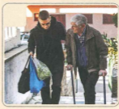
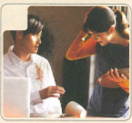
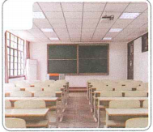
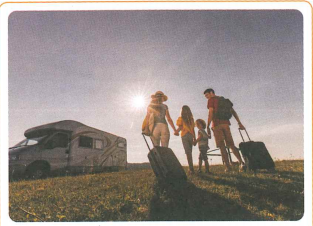
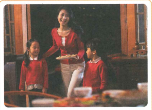
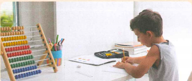

她请我们吃了北京烤鸭
Chị ấy đã mời chúng em ăn vịt quay Bắc Kinh.
4 cụm học · 4 bài khóa · 14 từ mới + 北京烤鸭 · 3 điểm ngữ pháp
🔥 Khởi động 1 · Chọn hình phù hợp
Mỗi ảnh là một câu riêng; ảnh được giữ trọn khung.



🧭 Khởi động 2 · Nhớ lại chuyến đi gần nhất
| Các hạng mục | Từ khóa | Câu trả lời |
|---|---|---|
| 出发时间 · Thời gian khởi hành | 什么时候去的 | |
| 同伴 · Bạn đồng hành | 和谁去的 | |
| 旅行方式 · Cách thức di chuyển | 怎么去的 |
Từ vựng 1
Audio từ mới: 1-2.
🎧 Nghe Bài khóa 1 · 1-1
Ngữ cảnh: 在机场，王一雪接到了白家月和安妮。 Vương Nhất Tuyết đã đón được Bạch Gia Nguyệt và Annie ở sân bay.
💬 Đọc Bài khóa 1
📍 Ngữ cảnh & câu hỏi
Ở sân bay, Bạch Gia Nguyệt và Annie gặp Vương Nhất Tuyết, chị gái của cô Vương Nhất Phi. Nhất Phi đã gọi điện nhờ chị mình đến đón hai bạn.
（1）来北京前，白家月认识王一雪吗？
（2）王一雪在做什么？
🧠 Ngữ pháp 1 · Trợ từ ngữ khí “吧” (2)
“吧” đặt cuối câu nghi vấn để biểu đạt ngữ khí suy đoán hoặc ước tính.
Hoàn thành hội thoại
（1）A：这是__________？ B：对，是我的手机，谢谢你！
（2）A：你__________？认识你很高兴。 B：是。认识你，我也很高兴。
（3）A：很晚了，老师__________？ B：那我们明天再去学校找她。
Từ vựng 2
Audio từ mới: 1-4.
🎧 Nghe Bài khóa 2 · 1-3
Ngữ cảnh: 在王一雪的车里，白家月、安妮和王一雪在聊天儿。 Vương Nhất Tuyết trò chuyện cùng Bạch Gia Nguyệt và Annie trong xe của cô ấy.
💬 Đọc Bài khóa 2
📍 Ngữ cảnh & câu hỏi
Trên xe, Vương Nhất Tuyết hỏi hai bạn có phải lần đầu đến Bắc Kinh không và biết họ đến đây để du lịch.
（1）王一雪这几天忙不忙？
（2）白家月有事可以找谁？
🧠 Ngữ pháp 2 · Câu “是……的”
Cấu trúc “是……的” dùng để nhấn mạnh thời gian, địa điểm, cách thức, người thực hiện, mục đích… của một sự việc đã xảy ra.
Trong câu khẳng định và nghi vấn có thể lược “是”; trong câu phủ định không được lược “是”.
Hoàn thành hội thoại
（1）A：你是坐车来学校的吗？ B：____________。
（2）A：你今天是几点到学校的？ B：____________。
（3）A：____________？ B：我是在书店看见安妮的。
Từ vựng 3
Audio từ mới: 1-6.
🎧 Nghe Bài khóa 3 · 1-5
Ngữ cảnh: 在王一雪的车上，白家月接了个电话。 Bạch Gia Nguyệt nhận một cuộc điện thoại khi đang ở trên xe của Vương Nhất Tuyết.
💬 Đọc Bài khóa 3
📍 Ngữ cảnh & câu hỏi
Trần Thiên Trung gọi điện nhờ Bạch Gia Nguyệt giúp một việc. Gia Nguyệt đã đến Bắc Kinh nên đề nghị Thiên Trung gọi Lý Văn.
（1）白家月现在在哪儿？
（2）白家月让陈天中找谁帮忙？为什么？
🧠 Ngữ pháp 3 · Câu kiêm ngữ
Vị ngữ gồm hai cụm động từ; tân ngữ của động từ thứ nhất đồng thời là chủ ngữ của động từ thứ hai. Khi động từ thứ nhất là 请、让、叫, cấu trúc biểu thị mời, nhờ, cho phép, yêu cầu hoặc sai ai làm gì.
我想请你帮个忙。
王老师让我们说中文。
妈妈叫孩子们回家。
Hoàn thành hội thoại
（1）A：明天我想请________来________。
B：好的，我下班后去买点儿菜。
（2）A：家月，王老师让________去________。
B：好的，我现在就去找她。
（3）A：小雪，你去哪儿？
B：我去超市。妈妈叫________。
Từ vựng 4
Audio từ mới: 1-8. Có cả danh từ riêng 北京烤鸭.
🎧 Nghe Bài khóa 4 · 1-7
Ngữ cảnh: 在酒店，白家月给王一飞发信息。 Bạch Gia Nguyệt nhắn tin cho cô Vương Nhất Phi ở trong khách sạn.
💬 Đọc Bài khóa 4
📍 Ngữ cảnh · Văn hóa · Câu hỏi
Gia Nguyệt báo đã tới Bắc Kinh; chị gái cô Vương ra đón, mời hai bạn ăn vịt quay Bắc Kinh và giới thiệu nhiều điều. Gia Nguyệt nói tiếng Trung của mình chưa tốt nên đôi lúc chưa hiểu ý chị ấy.
北京烤鸭 là món đặc sản nổi tiếng của Bắc Kinh và cũng là một nội dung văn hóa của bài.
（1）王老师的姐姐请白家月吃什么了？
（2）白家月为什么不懂王老师姐姐的意思？
✏️ Bài tập tổng hợp · Chọn từ
A 帮忙 B 已经 C 意思 D 介绍 E 有时
（1）我________去电影院看个电影。
（2）上课要多听、多说，你懂我的________吗？
（3）我很喜欢北京，这________是我第三次来北京了。
（4）A：安妮，我给你________一下，这是我的中国朋友李文。
B：你好，李文。认识你很高兴。
（5）A：今天的工作太多了！
B：那你找个人来________吧。
🖼️ Bài tập tổng hợp · Miêu tả tranh
Mỗi ảnh là một câu riêng, không ghép hoặc cắt mất ảnh.

他们是开车__________。

妈妈________孩子们__________。

他们__________去的。
她________7点__________。
🎭 Hoạt động trên lớp · Đóng vai
Hai người một nhóm: một người đóng vai người đến đón bạn, một người vừa ra đến cửa ga. Người đến đón hỏi mục đích đến đây và nơi cần đi đến. Cố gắng sử dụng tối đa từ vựng và điểm ngôn ngữ đã học.
B：不是，已经是第二次来北京了。
……
✅ Tổng kết Bài 1
Nội dung
4 cụm học · 4 bài khóa · đầy đủ 1-1 → 1-8.
14 từ mới chính: 就、给、让、接、次、旅游、帮忙、不好意思、已经、那、介绍、有时、懂、意思.
Danh từ riêng: 北京烤鸭.
Ngữ pháp
吧 (2) · “是……的” · Câu kiêm ngữ với 请 / 让 / 叫.